Limit.less — working product walkthroughLocal delivery · 8 October 2026Limit.less
From a résumé to skill insights, matched jobs, a tailored application and traceable submission outcomes.
A working walkthrough with explicit live-service limits.
1. Upload and understand
PDF, DOCX and text résumés produce visible skill claims. DOCX table content is included. Upload results show next actions for résumé review, skill demand and matching.
Claims are not certifications. Scanned documents need readable text.
2. Discover real opportunities
Greenhouse and Lever imports, Apify LinkedIn discovery and optional Adzuna India search feed per-account matching.
Verified Apify run: 10 Python Developer listings in Berlin. Posting dates are preserved; the connection test does not establish applicant suitability.
3. Tailor each résumé
Gemini or OpenAI writes a separate draft from source facts and the selected job. An actual draft was generated using the saved Gemini connection.
The applicant reviews the draft before submission. Invented experience is not permitted.
4. Apply and track evidence
The local Gemini browser worker fills supported employer forms and uploads a PDF. It records submission only after a new employer confirmation.
Missing answers, login and CAPTCHA stop for attention. An uncertain post-submit result is recorded without blind retry.
Controlled form submission tests passed. A real-employer submission has not been used as a test.5. Three data choices in Settings
Live shows imported job observations. Hackathon shows a recorded aggregate demonstration. Hybrid displays both with separate labels.
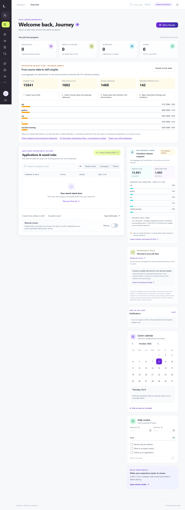
Demo applications never contact employers.
6. Social Studio and SAS
LinkedIn drafts, reviewed scheduling and provider delivery checks are implemented. The saved Publora key must pass authentication before live publishing can be verified.
SAS workspace launch and analysis navigation are integrated. VFL execution and verified sync await a real workspace session.
7. Evidence and remaining work
Production build and API checks pass. Browser journeys verify resume upload, demonstration applications, navigation, assessments and source settings.
Remaining external dependencies: website Apify token, accepted Publora credentials, SAS session, and suitable real-employer verification. Government automated vacancy discovery and broader internship coverage remain incomplete.
Delivery status and source referencesCaptured interface · 1Landing page — desktop
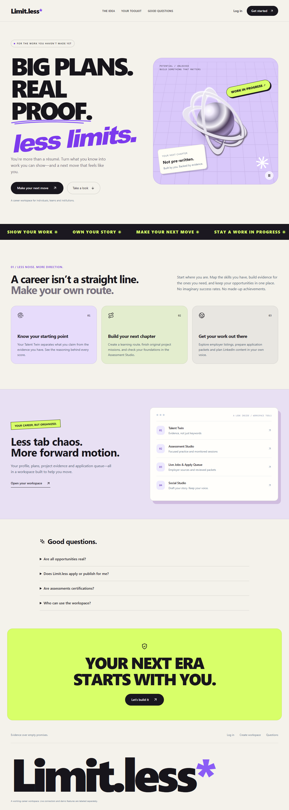
The current Limit.less landing and product introduction.
Captured interface · 2Landing page — mobile
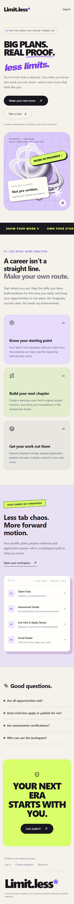
Responsive landing layout captured in the browser.
Captured interface · 3Main dashboard

Career overview for a fresh test account.
Captured interface · 4Resume upload and extracted skills
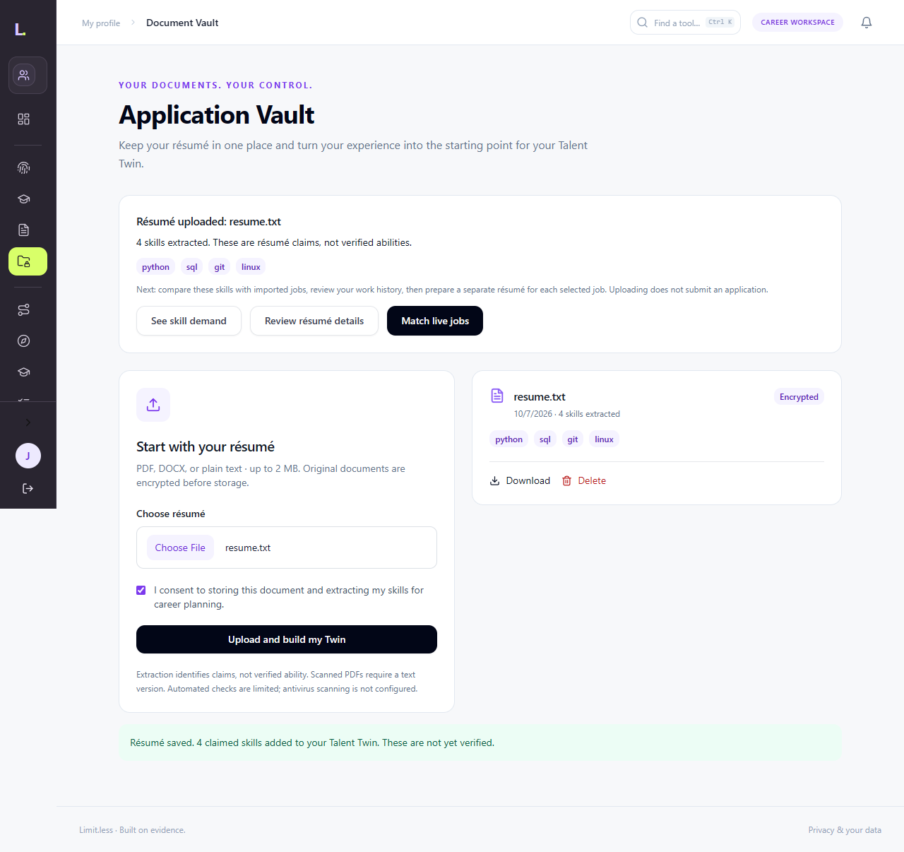
Document upload result, extracted claims and next actions.
Captured interface · 5Skill demand and missing skills
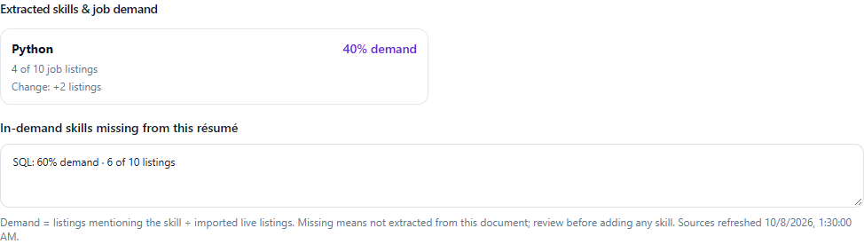
Actual UI with synthetic test data: Python demand 40%, four of ten listings, change +2; SQL demand 60%, missing from this sample resume.
Captured interface · 6Hackathon analysis view
Recorded aggregate sample, processing stages and demo navigation. VFL verification remains pending.
Captured interface · 7Application tracker — desktop
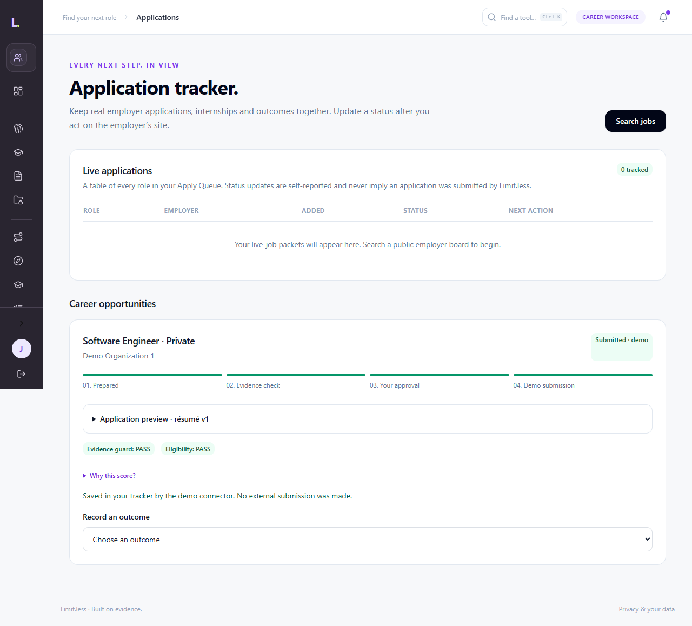
Explicitly labelled demo submission; no employer contact.
Captured interface · 8Application tracker — mobile
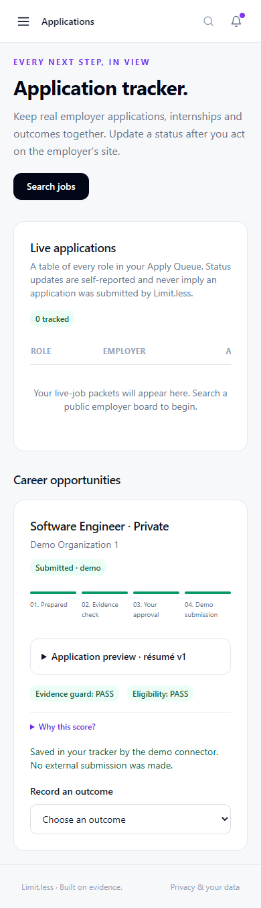
The demo journey on a mobile viewport.
Captured interface · 9Assessment Studio
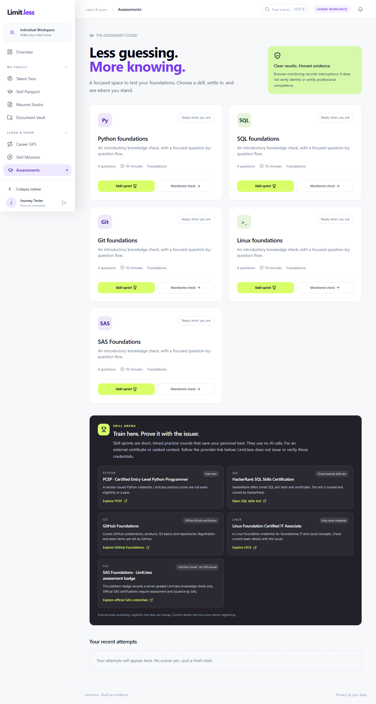
Practice and monitored-attempt choices.
Captured interface · 10Assessment attempt
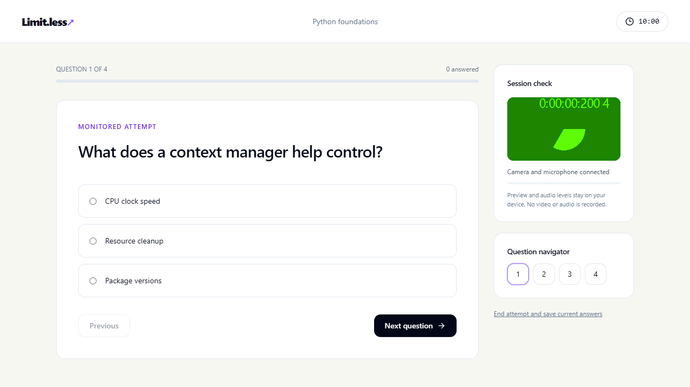
Captured assessment interface; monitoring is not certification.
Captured interface · 11Workforce analysis
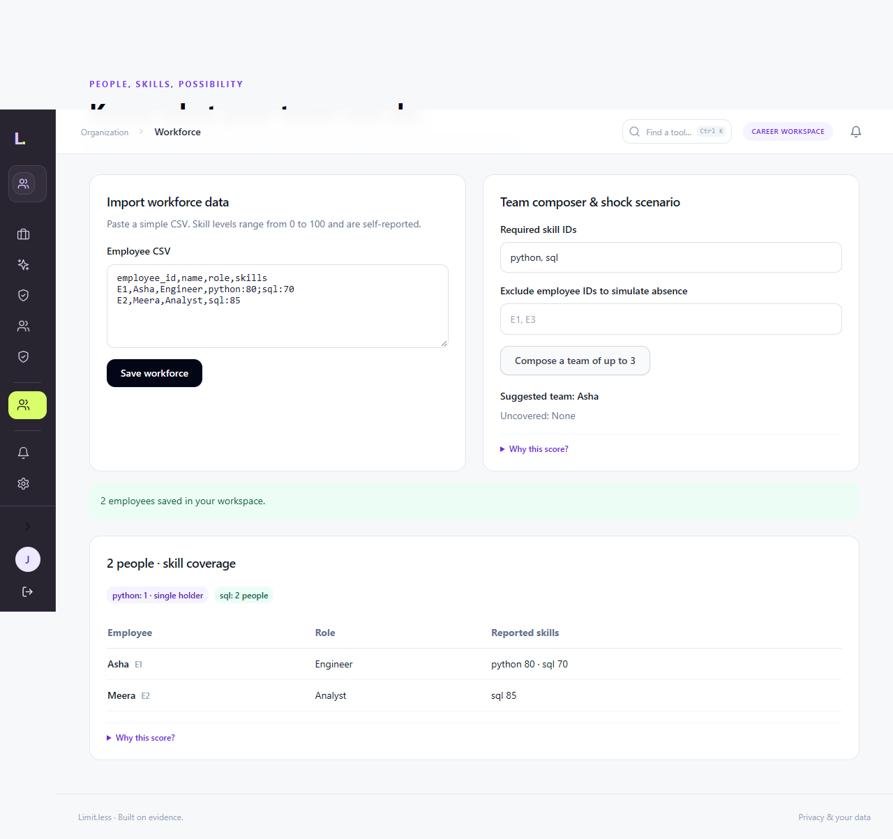
Organization workspace import and analysis demonstration.
Captured interface · 12Curriculum comparison
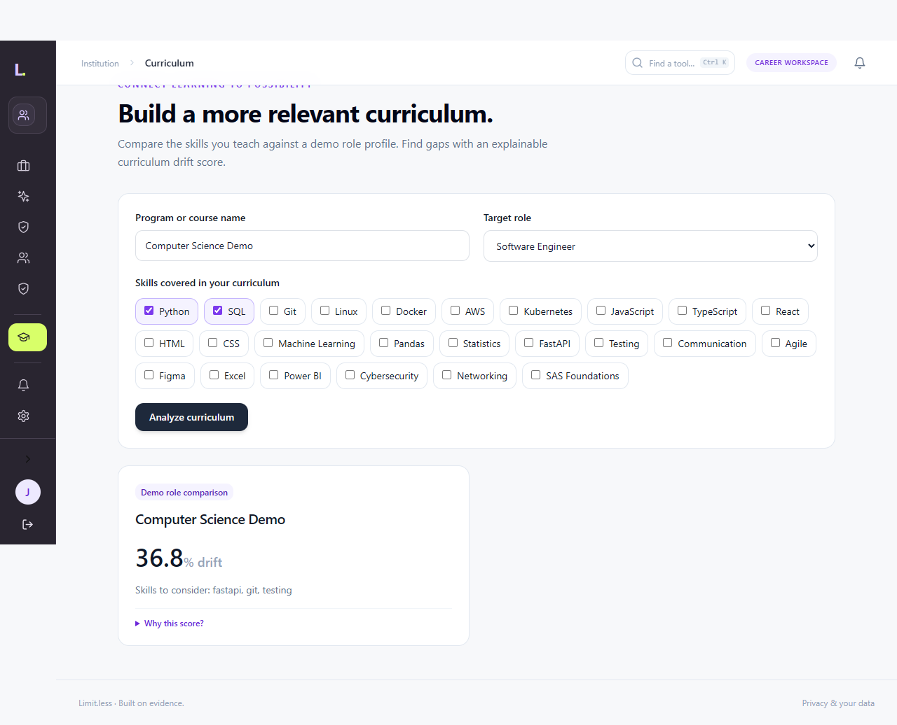
Institution workspace curriculum and gap analysis.
Captured interface · 13Compact navigation
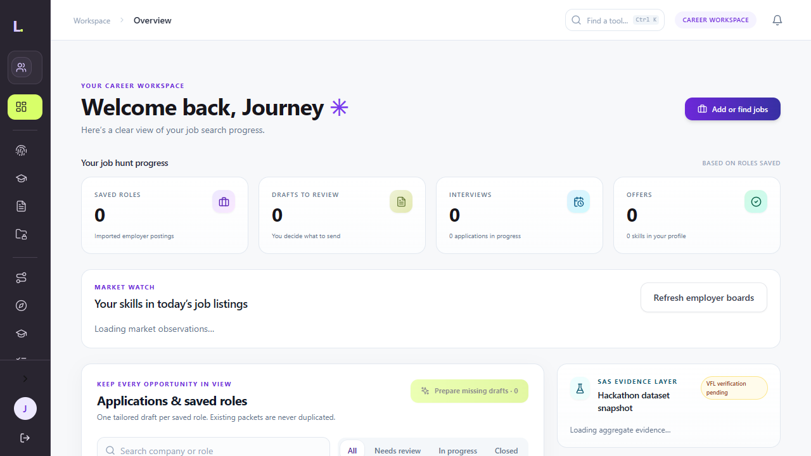
Tool rail and remembered navigation preferences.
Captured interface · 14Expanded navigation
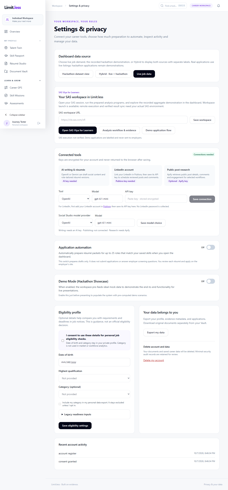
Categorized workspace navigation.
Captured interface · 15Mobile navigation
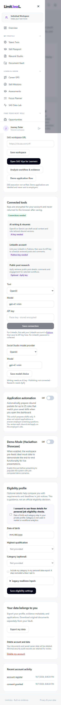
Accessible mobile menu captured during browser verification.
Captured interface · 16Sidebar rail
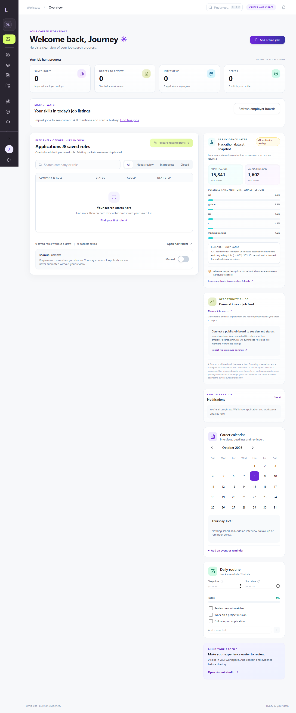
Compact sidebar state from the actual interface.
Live feed evidence
Greenhouse returned 426 public employer postings with HTTP 200. The receipt contains the source URL, collection timestamp and response hash.
Python: 106 / 426 × 100 = 24.88%. This is a selected-board mention share.
Apify discovery returned 10 listings; collection time is different from their posting dates.
Explore source counts interactivelyDataset issues and interpretation
Analytics Jobs: 15,841 rows; 3,508 missing job descriptions; 12,011 missing job types; 13,806 skill fields with ellipsis.
DataScience Jobs: 1,602 rows, 1,460 distinct references, 142 excess reference rows. The supplied weight sum 93,005 is not verified vacancies.
Read formulas, quality checks and interpretationEvidence charts
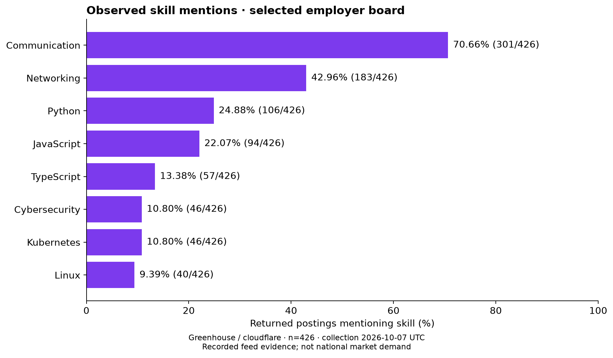
Counts retain the 426-posting denominator. No market forecast or hiring probability is implied.
Data quality
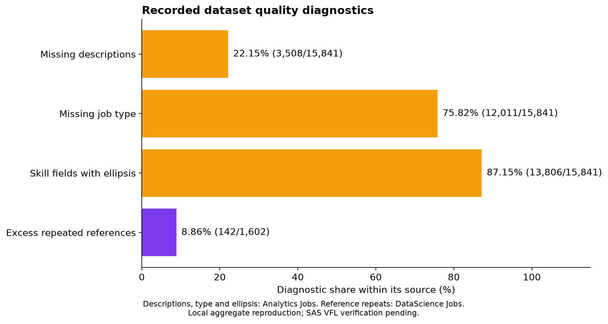
Each diagnostic uses its own source denominator.